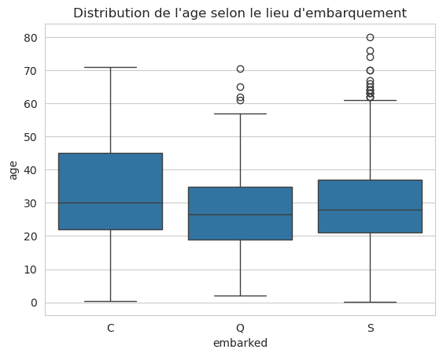
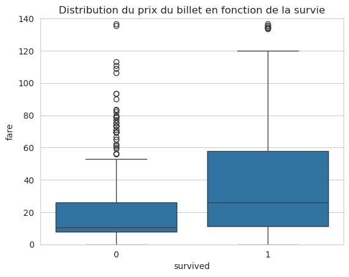
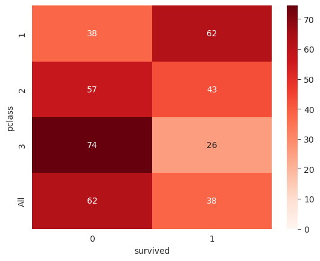
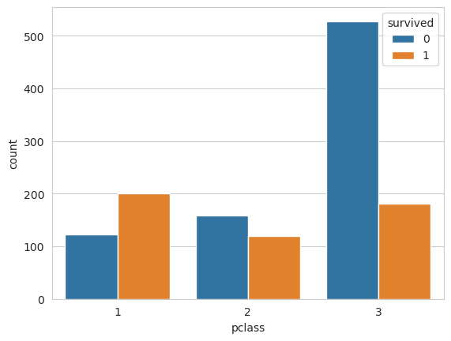
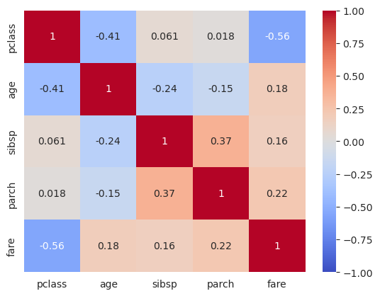
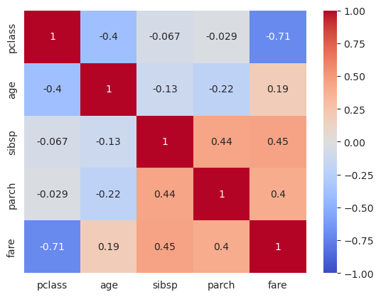
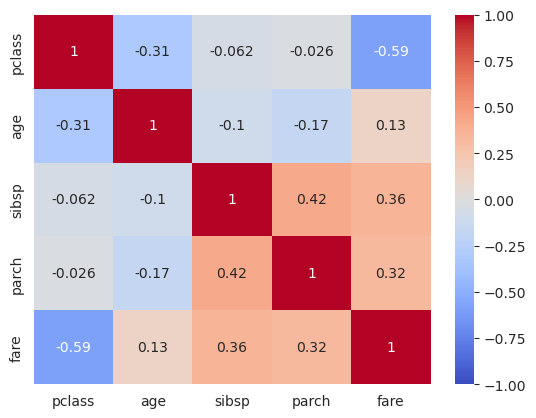

Les statistiques multivariées avec Pandas#
Du mono vers le multi : pourquoi ?#
Dans le notebook précédent (04-summarize-data), on a regardé chaque variable isolément (analyse univariée). C’était déjà riche en informations. Mais la vraie valeur d’un dataset vient de ses relations entre variables.
L’analogie à garder en tête : imaginez un détective qui essaie de comprendre un crime. Regarder chaque indice isolément (empreinte, mobile, alibi) lui donne des informations partielles. Ce qui fait avancer l’enquête, c’est de croiser ces indices : « la personne qui avait le mobile était-elle sur les lieux au bon moment ? ». C’est exactement ce que fait l”analyse multivariée : elle croise les variables pour révéler des patterns invisibles en univarié.
Les questions types de l’analyse multivariée :
« Est-ce que X change quand Y change ? » → corrélation.
« Est-ce que la distribution de X est différente selon les groupes de Y ? » → comparaison par catégorie.
« Quelles variables sont redondantes (apportent la même information) ? » → risque de multicolinéarité.
« Quelles variables sont les plus liées à la cible ? » → premières candidates pour être de bonnes features.
Pourquoi ça compte en ML ?
Identifier les features prédictives : une variable fortement corrélée à la cible est probablement un bon prédicteur (attention, ça ne garantit rien).
Détecter les redondances : deux features quasi identiques gonflent inutilement le modèle et peuvent déstabiliser certains algorithmes (régression linéaire, notamment).
Repérer le data leakage : une feature trop corrélée à la cible cache souvent une fuite d’information.
Guider le feature engineering : une relation non-linéaire entre deux variables peut suggérer une transformation.
Le dataset Titanic (rappel)#
Nous allons nous appuyer sur un cas de data science classique : le naufrage du Titanic.
Le dataset est composé de plusieurs colonnes :
Colonne |
Description |
|---|---|
|
Classe de voyage (1 = 1ère ; 2 = 2nde ; 3 = 3ème) |
|
Nom |
|
Sexe |
|
Âge |
|
Nombre de frères/sœurs/épouse à bord |
|
Nombre de parents/enfants à bord |
|
Numéro de ticket |
|
Montant du billet |
|
Numéro de cabine |
|
Port d’embarquement (C = Cherbourg ; Q = Queenstown ; S = Southampton) |
|
Numéro de barque (si survivant) |
|
Numéro de corps (si décédé) |
|
Destination |
Cible à prédire : survived → 0 = Non, 1 = Oui.
import warnings
warnings.simplefilter(action='ignore', category=FutureWarning)
import numpy as np
import matplotlib.pyplot as plt
import seaborn as sns
import pandas as pd
sns.set_style('whitegrid')
from sklearn.datasets import fetch_openml
titanic = fetch_openml("titanic", version=1, as_frame=True, parser="auto")
titanic1 = titanic.data
survived = titanic.target
titanic1.head()
| pclass | name | sex | age | sibsp | parch | ticket | fare | cabin | embarked | boat | body | home.dest | |
|---|---|---|---|---|---|---|---|---|---|---|---|---|---|
| 0 | 1 | Allen, Miss. Elisabeth Walton | female | 29.0000 | 0 | 0 | 24160 | 211.3375 | B5 | S | 2 | NaN | St Louis, MO |
| 1 | 1 | Allison, Master. Hudson Trevor | male | 0.9167 | 1 | 2 | 113781 | 151.5500 | C22 C26 | S | 11 | NaN | Montreal, PQ / Chesterville, ON |
| 2 | 1 | Allison, Miss. Helen Loraine | female | 2.0000 | 1 | 2 | 113781 | 151.5500 | C22 C26 | S | NaN | NaN | Montreal, PQ / Chesterville, ON |
| 3 | 1 | Allison, Mr. Hudson Joshua Creighton | male | 30.0000 | 1 | 2 | 113781 | 151.5500 | C22 C26 | S | NaN | 135.0 | Montreal, PQ / Chesterville, ON |
| 4 | 1 | Allison, Mrs. Hudson J C (Bessie Waldo Daniels) | female | 25.0000 | 1 | 2 | 113781 | 151.5500 | C22 C26 | S | NaN | NaN | Montreal, PQ / Chesterville, ON |
Suppression des variables inutiles pour la phase d’exploration#
Comme dans le notebook précédent, on nettoie d’abord :
cabin,home.dest: trop de valeurs manquantes → ignorées en phase exploratoire.boat,body: ⚠️ data leakage — elles encodent directement la target (survivant / décédé). À supprimer absolument.name,ticket: haute cardinalité, non exploitables en l’état.
titanic2 = titanic1.drop(["cabin", "home.dest", "boat", "body", "name", "ticket"], axis=1)
titanic2.head()
| pclass | sex | age | sibsp | parch | fare | embarked | |
|---|---|---|---|---|---|---|---|
| 0 | 1 | female | 29.0000 | 0 | 0 | 211.3375 | S |
| 1 | 1 | male | 0.9167 | 1 | 2 | 151.5500 | S |
| 2 | 1 | female | 2.0000 | 1 | 2 | 151.5500 | S |
| 3 | 1 | male | 30.0000 | 1 | 2 | 151.5500 | S |
| 4 | 1 | female | 25.0000 | 1 | 2 | 151.5500 | S |
Analyse multivariée#
On va croiser les variables entre elles pour repérer des patterns. Trois combinaisons possibles :
Type 1 |
Type 2 |
Outil |
|---|---|---|
Catégorielle |
Numérique |
Boxplot par groupe ( |
Catégorielle |
Catégorielle |
Tableau croisé ( |
Numérique |
Numérique |
Scatter plot, coefficient de corrélation, heatmap de corrélation |
On va parcourir ces trois cas en les appliquant au Titanic.
Relation entre variables qualitatives et variables numériques#
Le problème : on veut comparer la distribution d’une variable numérique (age, fare) selon les catégories d’une autre variable (embarked, sex, survived).
La solution classique : tracer un boxplot par catégorie. On obtient plusieurs boîtes à moustaches côte à côte et on compare leurs positions (médianes), leurs tailles (dispersions) et leurs outliers.
Pourquoi c’est instructif : deux groupes peuvent avoir la même moyenne mais des distributions totalement différentes. Ou des médianes très proches mais des dispersions opposées. Un boxplot par catégorie révèle tout ça en un coup d’œil.
ax = sns.boxplot(data=titanic2, x="embarked", y="age")
ax.set_title("Distribution de l'age selon le lieu d'embarquement");

Observation : l”âge médian des voyageurs ayant embarqué à Cherbourg (C) est plus élevé que celui des autres ports.
Interprétation métier : Cherbourg était un des ports d’embarquement pour la 1ère classe du Titanic (les voyageurs riches et plus âgés montaient à Cherbourg, notamment parce que la France était un point de départ pour les Américains fortunés rentrant chez eux). Southampton était plus « populaire », Queenstown accueillait surtout les émigrants irlandais souvent plus jeunes.
Leçon : l’EDA multivariée révèle ici une structure sociale historique cachée dans les données. C’est exactement ce qu’on cherche — et ce que la statistique univariée n’aurait jamais révélé.
Étudier le lien variable numérique ↔ cible est une étape clé en feature selection. Une forte différence de distribution entre les classes de la cible signale une variable potentiellement prédictrice.
L’intuition : si la distribution de
farechez les survivants est très différente de celle chez les non-survivants, alorsfare« sait quelque chose » sur la survie. C’est précisément ce que les algorithmes de ML vont exploiter.
ax = sns.boxplot(x=survived, y=titanic2["fare"])
ax.set_title("Distribution du prix du billet en fonction de la survie")
ax.set_ylim((0, 140))
(0.0, 140.0)

Observation : les survivants avaient payé un prix nettement plus élevé que ceux qui n’ont pas survécu.
Pourquoi ? Le prix du billet est fortement corrélé à la classe de voyage (
pclass), et les passagers de 1ère classe avaient des cabines plus proches du pont supérieur, donc un accès plus rapide aux canots de sauvetage. Lefareencode une information sociale qui s’est traduite par un avantage physique en cas d’évacuation.Leçon ML :
fareest déjà identifiée comme une bonne feature pour prédire la survie, sans avoir entraîné le moindre modèle. C’est la force de l’EDA : elle guide le feature engineering avant la modélisation.
Liens entre variables qualitatives#
Pour croiser deux variables catégorielles, on utilise un tableau croisé (cross-tab ou contingency table). pd.crosstab() compte combien d’observations tombent dans chaque combinaison (cat1, cat2).
Mental model : c’est l’équivalent en Python du tableau croisé dynamique d’Excel. On choisit une variable en ligne, une en colonne, et on compte les occurrences de chaque cellule.
ctab = pd.crosstab(titanic2["pclass"], survived, margins=True)
ctab
| survived | 0 | 1 | All |
|---|---|---|---|
| pclass | |||
| 1 | 123 | 200 | 323 |
| 2 | 158 | 119 | 277 |
| 3 | 528 | 181 | 709 |
| All | 809 | 500 | 1309 |
Les effectifs bruts ne sont pas toujours parlants — surtout si les groupes sont de tailles très différentes. Ce qui compte vraiment en ML, c’est le pourcentage : « parmi les 1ère classe, quel pourcentage a survécu ? ».
On transforme donc chaque ligne pour que les valeurs expriment des proportions par classe.
ctab_pclass = ctab.apply(lambda x: x / x["All"] * 100, axis=1)
ctab_pclass.round(2)
| survived | 0 | 1 | All |
|---|---|---|---|
| pclass | |||
| 1 | 38.08 | 61.92 | 100.0 |
| 2 | 57.04 | 42.96 | 100.0 |
| 3 | 74.47 | 25.53 | 100.0 |
| All | 61.80 | 38.20 | 100.0 |
La heatmap est une excellente manière de visualiser un tableau croisé : la couleur code l’intensité, on voit immédiatement les cases « chaudes » (nombre élevé) et « froides ».
Astuce de lecture : on veut voir émerger des contrastes — si toutes les cases sont de la même couleur, la variable n’a pas d’effet sur la cible.
sns.heatmap(ctab_pclass[["0", "1"]], vmin=0, annot=True, cmap="Reds");

sns.countplot est une alternative au crosstab pour visualiser la même information : au lieu d’afficher les chiffres dans une table, on dessine un barplot groupé. Avec hue='survived', chaque catégorie se divise en deux barres (une par classe cible).
Quand l’utiliser ? Quand on veut voir les effectifs absolus en plus des proportions. Un barplot est souvent plus immédiatement parlant qu’une heatmap pour un public non technique.
titanic2_target = titanic2.copy()
titanic2_target["survived"] = survived.astype(int)
ax = sns.countplot(x="pclass", hue="survived", data=titanic2_target)

Recherche de corrélations entre variables#
L’idée : mesurer à quel point deux variables varient ensemble. Plutôt que regarder des graphiques un à un, on calcule un nombre entre -1 et +1 qui résume la force et le sens de la relation. C’est le coefficient de corrélation.
Interpréter un coefficient de corrélation#
Valeur |
Signification |
|---|---|
+1 |
Relation parfaite et positive (quand X monte, Y monte proportionnellement) |
0 |
Pas de relation (linéaire) détectée |
-1 |
Relation parfaite et négative (quand X monte, Y descend) |
Pourquoi c’est utile en ML#
En pratique, on calcule une matrice de corrélation (toutes les paires de variables en même temps) pour répondre à deux questions :
Quelles variables sont corrélées avec la cible ? → ce sont les candidates fortes pour être de bonnes features (toujours à vérifier, mais c’est un bon point de départ).
Quelles variables sont corrélées entre elles ? → si deux features sont très corrélées (ex : 0,95), elles apportent presque la même information. C’est une redondance qui peut :
gonfler inutilement la dimensionnalité ;
déstabiliser certains algorithmes (régression linéaire → multicolinéarité, KNN → biais d’échelle).
Dans ces cas, on peut en supprimer une, ou les combiner (PCA, moyennes…).
⚠️ Corrélation ≠ causalité. Deux variables peuvent varier ensemble sans qu’une cause l’autre. L’exemple classique : les ventes de glace et les noyades sont corrélées — pas parce que la glace cause la noyade, mais parce que l’été est un facteur commun caché. Un coefficient de corrélation détecte un pattern, il ne l’explique pas.
Coefficient de corrélation linéaire de Pearson#
C’est la corrélation la plus connue et la plus utilisée. Elle mesure la force d’une relation linéaire entre deux variables.
Définition en une phrase : Pearson mesure les relations linéaires entre deux variables quantitatives continues supposées normalement distribuées.
À savoir avant de s’en servir : il faut être extrêmement prudent en utilisant la corrélation linéaire. Un coefficient proche de 0 ne signifie pas qu’il n’y a pas de relation entre les variables — ça signifie seulement qu’il n’y a pas de relation linéaire. Deux variables peuvent être fortement liées (ex : \(Y = X^2\)) avec un coefficient de Pearson très faible.
Grille d’interprétation#
Valeur |
Sens |
|---|---|
+1 |
Relation linéaire positive parfaite (les points sont sur une droite montante) |
0 |
Pas de relation linéaire détectée |
-1 |
Relation linéaire négative parfaite (droite descendante) |
Conditions d’utilisation#
Variables quantitatives continues.
Relation linéaire présumée.
Données sans outliers marqués (Pearson est très sensible aux valeurs extrêmes, comme la moyenne et l’écart-type).
Illustration visuelle#
La figure ci-dessous montre plusieurs cas. Remarquez la ligne du bas : ce sont des relations très nettes (parabole, X, cercle…) avec un coefficient de Pearson de 0. C’est le piège à retenir.

La formule (pour les curieux)#
\( \Large{ r = \frac{\sum_{i=1}^{n} (X_i - \bar{X})(Y_i - \bar{Y})}{\sqrt{\sum_{i=1}^{n} (X_i - \bar{X})^2} \sqrt{\sum_{i=1}^{n} (Y_i - \bar{Y})^2}} } \)
Décodage :
Le numérateur \(\sum (X_i - \bar{X})(Y_i - \bar{Y})\) est positif quand les deux écarts ont le même signe (les deux valeurs sont soit toutes deux au-dessus de leur moyenne, soit toutes deux en-dessous) et négatif sinon. C’est la covariance (non normalisée).
Le dénominateur normalise par les écarts-types pour que le résultat soit borné entre -1 et +1 (sans unité).
En langage courant : Pearson mesure à quel point X et Y s’écartent de leurs moyennes de manière synchronisée. Si l’écart est toujours dans le même sens → corrélation positive. Si toujours dans le sens opposé → négative.
# Coefficient de Pearson
corr_pearson = titanic2.corr(numeric_only=True)
corr_pearson
| pclass | age | sibsp | parch | fare | |
|---|---|---|---|---|---|
| pclass | 1.000000 | -0.408106 | 0.060832 | 0.018322 | -0.558629 |
| age | -0.408106 | 1.000000 | -0.243699 | -0.150917 | 0.178739 |
| sibsp | 0.060832 | -0.243699 | 1.000000 | 0.373587 | 0.160238 |
| parch | 0.018322 | -0.150917 | 0.373587 | 1.000000 | 0.221539 |
| fare | -0.558629 | 0.178739 | 0.160238 | 0.221539 | 1.000000 |
Visualisation avec une heatmap : la matrice de corrélation devient un damier coloré. Rouge foncé = corrélation positive forte, bleu foncé = corrélation négative forte, blanc/pâle = proche de 0.
Le réflexe de lecture :
La diagonale est toujours à 1 (une variable est parfaitement corrélée avec elle-même).
La matrice est symétrique :
corr(X, Y) = corr(Y, X)— donc la moitié suffit à lire.On cherche d’abord les cases très colorées hors diagonale (relations fortes à explorer) et les lignes/colonnes de la target (futures bonnes features).
sns.heatmap(corr_pearson, annot=True, vmin=-1, cmap="coolwarm");

Limites de Pearson#
Le coefficient de Pearson fait des hypothèses fortes sur les données, souvent violées en pratique :
Il s’applique sur des variables continues (pas ordinales, pas catégorielles).
Linéarité : 1 ou -1 correspondent à une relation strictement linéaire — toute courbure sera sous-estimée.
Normalité : les données devraient suivre une distribution gaussienne.
Homoscédasticité : les données sont uniformément dispersées autour de la droite de régression (la variance ne change pas avec X).
Sur le Titanic, est-ce que Pearson convient ?#
Non, pas vraiment :
Plusieurs variables sont ordinales (
pclass) ou discrètes avec peu de valeurs (sibsp,parch).L’analyse univariée du notebook précédent a montré que
farea une longue traîne à droite (skew positif) → pas gaussien du tout.
Conclusion : le coefficient de Pearson n’est pas le plus adapté ici. On va utiliser Spearman (ou Kendall) qui sont plus robustes à ces problèmes.
Corrélation de Spearman#
L’idée : Spearman ne regarde pas les valeurs elles-mêmes, mais leurs rangs (qui est le plus petit, le deuxième, le troisième…). Il calcule ensuite la corrélation de Pearson sur les rangs.
Mental model : Pearson demande « est-ce que X et Y sont sur une droite ? ». Spearman demande seulement « est-ce que X et Y montent et descendent dans le même ordre ? ».
Conséquence : la relation doit être monotone (strictement croissante ou décroissante), mais pas forcément linéaire. \(Y = X^2\) sur des valeurs positives est parfaitement monotone → Spearman = 1 ; Pearson serait inférieur à 1.
Caractéristiques#
S’applique entre des variables continues OU ordinales (nettement plus flexible que Pearson).
Pas d’hypothèse de normalité.
Robuste aux outliers : comme on travaille sur les rangs, une valeur extrême devient juste « la plus grande » — elle n’a plus l’effet démesuré qu’elle aurait sur la moyenne.
Interprétation#
+1 : relation monotone croissante parfaite.
-1 : relation monotone décroissante parfaite.
Les valeurs intermédiaires se lisent comme Pearson : plus proche de ±1, plus forte.
Avantages pour nous (Titanic)#
Fonctionne sur
pclass(ordinale).Pas perturbé par la traîne de
fare.Robuste aux outliers du dataset.
C’est donc notre choix par défaut pour ce dataset.
corr_spearman = titanic2.corr("spearman", numeric_only=True)
sns.heatmap(corr_spearman, annot=True, vmin=-1, cmap="coolwarm");

Corrélation de Kendall#
L’idée : Kendall compte le nombre de paires concordantes (pour lesquelles les deux variables augmentent ou diminuent ensemble) et de paires discordantes (où l’une augmente tandis que l’autre diminue), et calcule leur différence normalisée.
Mental model : on prend toutes les paires possibles de deux observations dans le dataset. Pour chaque paire, on regarde si
XetY« vont dans le même sens » ou dans des sens opposés. Kendall mesure la proportion de paires qui vont dans le bon sens.
Caractéristiques#
Adapté aux variables ordinales.
Plus conservateur que Spearman : ses estimations sont généralement plus faibles en valeur absolue (ce qui ne veut pas dire qu’elles sont « moins bonnes » — juste qu’elles pénalisent plus certains cas).
Plus robuste aux ex-aequos (valeurs identiques) que Spearman.
Adapté aux petits échantillons (le p-value est mieux contrôlé).
Cas d’usage#
Données ordinales (rangs, scores, catégories ordonnées).
Échantillons de petite taille.
Présence fréquente d’ex-aequos (beaucoup de valeurs identiques).
En pratique : Spearman et Kendall donnent des classements très similaires — si Spearman dit « X est la variable la plus corrélée à Y », Kendall le dit presque toujours aussi. Pour un usage courant en data science, Spearman suffit amplement. On sort Kendall si on a vraiment un petit échantillon ou beaucoup d’ex-aequos.
corr_kendall = titanic2.corr("kendall", numeric_only=True)
sns.heatmap(corr_kendall, annot=True, vmin=-1, cmap="coolwarm");

⚠️ Remarque importante : Nous avons travaillé sur le jeu de données complet (train + test). Ce n’est pas un gros problème ici parce qu’on reste prudent dans les conclusions qu’on tire et qu’on ne fera pas reposer une décision critique sur ces observations.
Mais en général, on isole le jeu de test avant toute EDA et on ne travaille que sur le train. Sinon, on introduit un data leakage subtil : des décisions influencées par le test (imputations, seuils, features sélectionnées) « fuitent » vers le train, et on finit par sur-estimer la performance du modèle.
Comparaison des trois méthodes#
Critère |
Pearson |
Spearman |
Kendall |
|---|---|---|---|
Type de relation |
Linéaire |
Monotone |
Monotone |
Hypothèses |
Normalité, linéarité |
Aucune |
Aucune |
Variables |
Continues |
Continues ou ordinales |
Continues ou ordinales |
Sensibilité aux outliers |
Forte |
Faible |
Faible |
Sensibilité aux ex-aequos |
Modérée |
Modérée |
Faible |
Puissance statistique |
Élevée (si hypothèses OK) |
Moyenne |
Faible (petits échantillons) |
🎯 Synthèse — l’analyse multivariée en data science#
Pourquoi c’est essentiel#
Une analyse multivariée bien faite permet de :
Identifier les features les plus prédictives avant d’entraîner un modèle.
Détecter les redondances (variables très corrélées entre elles) qui peuvent dégrader certains algorithmes.
Repérer le data leakage (une corrélation « trop belle » avec la target cache souvent une fuite).
Guider le feature engineering (relations non-linéaires → créer une transformation ou une interaction).
La démarche type#
Croiser chaque feature avec la target (boxplot, crosstab, corrélation) → repérer les plus prédictives.
Matrice de corrélation des features entre elles (Spearman de préférence) → repérer les redondances.
Visualiser avec des heatmaps, pairplots, boxplots groupés.
Documenter les observations : chaque pattern détecté est une hypothèse à retenir pour la phase de modélisation.
Les pièges à connaître#
⚠️ Corrélation ≠ causalité. Une corrélation est un pattern statistique, pas une explication. Pour conclure à un lien causal, il faut soit un modèle causal explicite (ex : causal inference), soit une expérience contrôlée (A/B test).
⚠️ Pearson sur des données non-gaussiennes : biais garanti. Préférer Spearman.
⚠️ EDA sur le dataset complet : introduit un data leakage subtil. Toujours isoler le test d’abord en production.
⚠️ Oublier les relations non-linéaires : toutes les corrélations numériques manquent les relations \(Y = X^2\), \(Y = \sin(X)\), etc. Un scatter plot reste indispensable pour détecter ces cas.
⚠️ Taille d’échantillon : sur 30 observations, une corrélation de 0.3 peut être du bruit statistique. Toujours accompagner d’un test de significativité (ou au moins d’un bon sens critique) sur les petits échantillons.
Aller plus loin#
Outil |
Pour quoi faire ? |
|---|---|
|
Grille de scatter plots + histogrammes, couleurs par classe. Le « couteau suisse » de la bivariée. |
|
Vue synthétique des corrélations numériques. |
|
Stats descriptives par groupe, version tableau. |
|
Test statistique du \(\chi^2\) pour l’indépendance entre variables catégorielles. |
|
ANOVA : « les moyennes des groupes sont-elles significativement différentes ? » |
|
Information mutuelle : mesure la dépendance non-linéaire entre une feature et la target. Excellent complément aux corrélations classiques. |
Le mot de la fin#
L’analyse multivariée est le moment où les données commencent à raconter une histoire. Elle transforme un tableau de chiffres en un ensemble d’hypothèses testables : « les femmes en 1ère classe ont eu plus de chances de survivre », « le prix du billet est un proxy du statut social », «
sibspetparchensemble capturent la taille de la famille ». Chacune de ces hypothèses pourra (ou non) être confirmée par la modélisation — mais c’est ici, pendant l’EDA, qu’elles naissent.
Comment choisir ?#
Pearson : relation clairement linéaire + données normales + pas d’outliers. Cas « de labo », rare en pratique.
Spearman : le choix par défaut en data science. Robuste, flexible, fonctionne sur la plupart des situations réelles (données non-normales, ordinales, outliers).
Kendall : surtout pour petits échantillons ou quand il y a beaucoup d’ex-aequos. Un peu plus conservateur — bonne option si on veut des estimations « prudentes ».